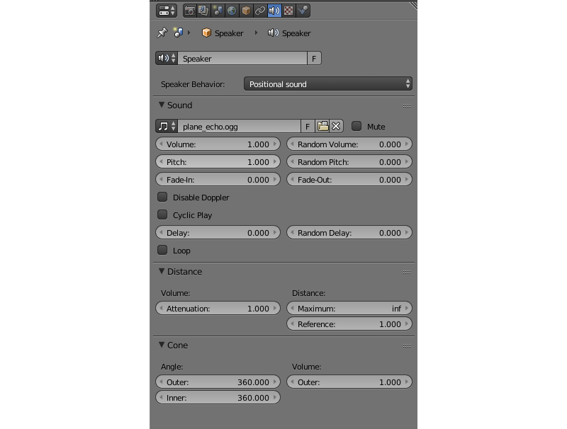

Звук¶
Содержание
Создание звуковых источников осуществляется в Blender’e. Используется стандартный объект Speaker.
{kind=link}
Настройка звуковых источников¶
Настройки спикера выставляются в панели Properties на вкладке Object Data.
Движком поддерживаются все стандартные для Blender параметры звука и некоторые специфические для движка опции.
Speaker Behavior:
Поведение звукового источника.
Positional— высококачественный звук, допускающий позиционирование и имеющий направленность (конусность). Для рендеринга используется Web Audio API. Воспроизведение подобных звуков обладает наименьшей производительностью, поэтому их использовать целесообразно только для коротких сэмплов.
Background Sound— высококачественный всенаправленный звук без возможности позиционирования в пространстве. Для рендеринга используется Web Audio API. Более производителен, однако нецелесообразен для музыки.
Background Music— используется для воспроизведения музыки. Максимальная производительность вследствие использования тега Audio, минимальная гибкость.
На панели Sound доступны следующие настройки:
Volume
Громкость источника.
Random Volume
Дополнительная рандомизация громкости. Результирующее значение определяется аналогично задержке.
Pitch
Скорость проигрывания (высота) звука.
Random Pitch
Дополнительная рандомизация скорости проигрывания звука. Результирующее значение определяется аналогично задержке.
Fade-In
Интервал плавного включения звука.
Fade-Out
Интервал плавного выключения звука.
Disable Doppler
Игнорировать смещение частоты источника при его перемещении.
Cyclic Play
Зацикливать воспроизведение звука.
Delay
Задержка в секундах перед началом проигрывания звука.
Random Delay
Дополнительная рандомизация задержки, результирующее значение определяется по формуле \(Delay_{result} = Delay + Delay_{random} * Random_{[0-1]}\).
Loop
Зацикливать воспроизведение звука. Отличается от
Cyclic Play, тем, что способен обеспечить нулевую задержку при повторении. Опция доступна только для звуковых источников с поведениемPositionalилиBackground Sound.
{kind=link}
Обработка и кодирование¶
Поддерживаемые форматы (контейнеры):¶
ogg, кодек Vorbis (Chrome, Firefox)
- mp3 (Chrome, Safari)
mp4, кодек AAC (Chrome, Safari)
Рекомендуется использовать Ogg, который является открытым стандартом, поддерживается многими браузерами, обеспечивает хорошее качество звука. Оптимальным с точки зрения качества и совместимости является формат 48кГц/16бит. Одноканальный звук (моно) используется для хранения коротких сэмплов, двухканальный звук (стерео) - для музыкального сопровождения.
Конвертация ресурсов в различные форматы описывается в соответствующем разделе.